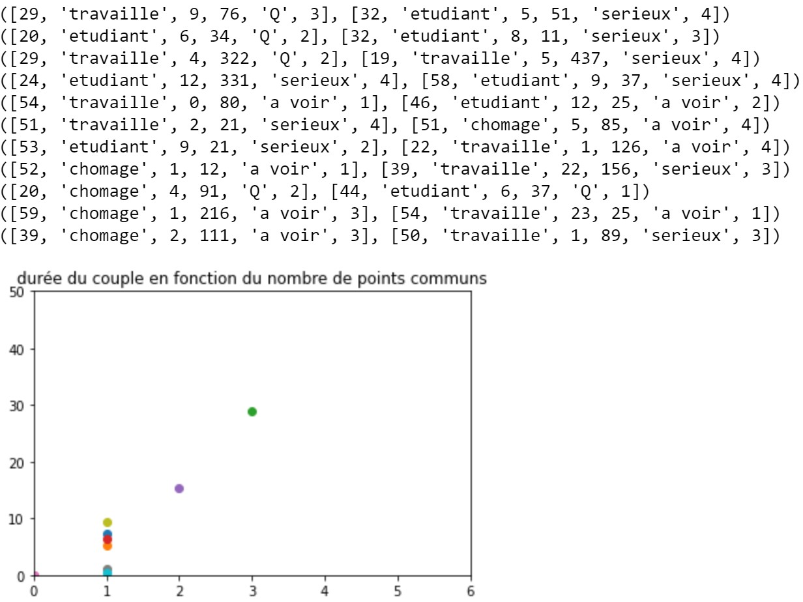

Projet ARE Homogamy Network
Notre sujet porte sur l’étude des relations amoureuses Homme/Femme,
le but sera de modéliser l’évolution du nombre de couples et leur durée
en mettant en relation différents agents aléatoires. Pour cela, il nous
faut donc connaître les personnalités types qui s’assemblent, et les raisons
qui poussent un couple à durer ou pas. En effet même si on peut à juste
titre croire au coup de foudre et à l’amour éternel les études ont prouvé
que régulièrement on retrouvait les mêmes caractéristiques d’un couple à l’autre.
Cela pourrait permettre de progresser dans la compréhension
des relations humaines à une échelle plus large mais aussi pour certaines firmes
de ciblée encore plus précisément leurs clients et leur publicité .
Première idée des paramètres à prendre en compte dans le code :
- Age
- genre
- caracteres : valeur entre 0 et 1 // ou valeur discrète
- etat d'esprit // envie du moment
- nombre de relations passées
- durée des relations passées
- probabilité de rencontre ( réseau social, small world)
- homophilie et homogamie
Paramètres finalement pris en compte pour symboliser les agents :
- Age
- Statut social: 'travaille, etudiant ou chomage'
- caracteres : valeur discrète de 1 à 4 selon le test de personnalité MBTI
- etat d'esprit // envie du moment
- nombre de relations passées
- durée moyenne des relations passées
Semaine du 28 mars:
Cette semaine nous nous sommes séparé les tâches pour avancer à la fois sur le code, conçu
sans valeurs précises, et sur les données et l'importance de chacune. Marko a donc commencé
à coder une première version de notre modèle avec seulement "le corps" des fonctions sans
rentrer de valeurs liées aux données. Ce programme est donc censé fonctionner pour n'importes
quelles valeurs ou modèle simulant la même chose que nous. Pendant ce temps je me suis occupé de
rechercher dans les articles de notre bibliographie des tableaux indiquant quels étaient les
acteurs déterminants. De plus j'ai trouvé des statistiques qu'on a utilisées pour mettre un pourcentage
à chacun des paramètres en fonction de leur impact sur la durée d'un couple. En effet comme
pour l'instant on ne sait pas exactement comment fonctionne l'amour et pourquoi on s'attache parfois
à des personnes qui n'ont rien à voir avec nous, on a choisit de représenter cela grâce à la fonction random.choice
avec un coefficient différent pour chaque paramètres.Le code fonctionne bien et nous affiche une courbe représentant la durée d'un couple (en années)
en fonction du nombre de paramètres compatibles.

On voit sur notre premier graphique en forme de nuage de point que plus le couple tiré a de points communs plus il va durer longtemps.
Semaine du 04 avril:
Nous commençons à appliquer des coefficients proche de la réalité, c'est à dire, par exemple, que la différence d'âge entre les deux individus
de notre couple importe plus que la différence de taille. Notre code semble prendre en compte les nouveux coefficients,
cependant la courbe que l'on espérait être strictement croissante présente des fluctuations en son milieu, cela doit être dû à une erreur de codage.
Semaine du 11 avril: